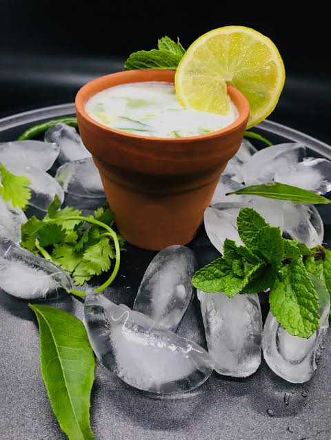
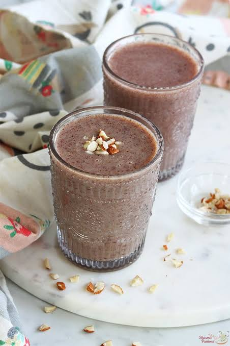
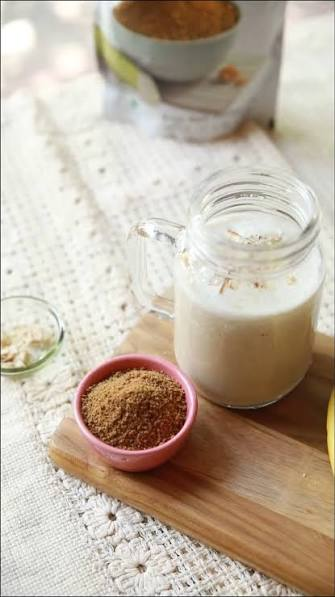
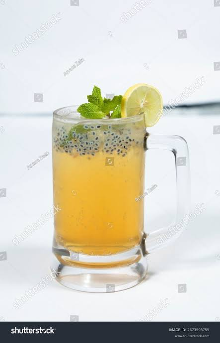
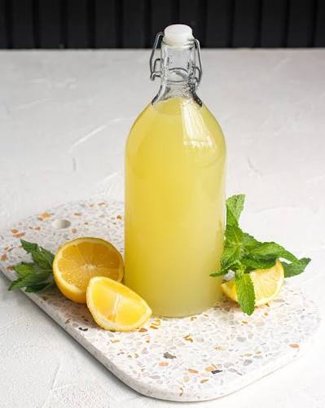
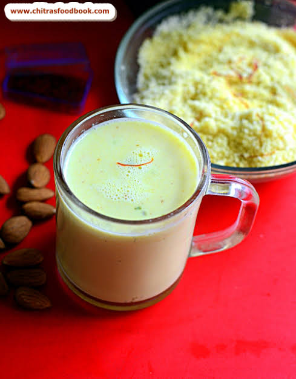

Strawberry Milkshake
Ingredients
Strawberry, Milk, Sugar, Ice Cream.
Instructions
Blend strawberries, milk, sugar, and ice cream until smooth and creamy. Serve chilled.

Strawberry, Milk, Sugar, Ice Cream.
Blend strawberries, milk, sugar, and ice cream until smooth and creamy. Serve chilled.
Coffee Powder, Milk, Sugar, Ice Cubes.
Blend coffee, milk and sugar. Serve chilled.

Majjiga is prepared using 2 cups of fresh curd, 2 cups of chilled water, 2 green chilies, a 1-inch piece of ginger, a few curry leaves, 2 tablespoons of chopped coriander leaves, ½ teaspoon of cumin powder, salt to taste, and a few ice cubes (optional).
Blend the curd with chilled water until smooth and frothy. Add finely chopped green chilies, grated ginger, curry leaves, coriander leaves, cumin powder, and salt. Mix well until all the ingredients are evenly combined. Serve chilled as a refreshing drink, especially during hot weather or alongside spicy Andhra meals.

Ragi Malt is made using ¼ cup of ragi (finger millet) flour, 2 cups of milk or water, 2 tablespoons of jaggery or sugar, ¼ teaspoon of cardamom powder, and a few chopped almonds or cashews for garnish (optional).
Mix the ragi flour with a little water to make a smooth paste without lumps. Heat the milk or water in a saucepan and gradually add the ragi mixture while stirring continuously. Cook on low heat until it thickens. Add jaggery or sugar and cardamom powder, stir until dissolved, and serve warm or chilled according to preference.

Bellam Paalu is prepared using 2 cups of milk, 2–3 tablespoons of grated jaggery, ¼ teaspoon of cardamom powder, a few saffron strands (optional), and chopped almonds or pistachios for garnish.
Heat the milk until it begins to boil, then reduce the heat and allow it to cool slightly. Add the grated jaggery and stir until it dissolves completely. Mix in the cardamom powder and saffron strands if using. Pour into serving glasses, garnish with chopped nuts, and serve warm.

Nannari Sharbat is prepared using 4 tablespoons of nannari syrup, 2 cups of chilled water, 1 tablespoon of lemon juice, a few ice cubes, and lemon slices for garnish.
Pour the nannari syrup into a serving glass and add chilled water. Mix in the lemon juice and stir well until combined. Add ice cubes and garnish with lemon slices. Serve immediately as a cooling and refreshing summer drink.

Lemon Juice is made using the juice of 2 fresh lemons, 2 cups of chilled water, 2–3 tablespoons of sugar, a pinch of salt, a pinch of roasted cumin powder, and a few ice cubes.
Combine the lemon juice, chilled water, sugar, salt, and roasted cumin powder in a jug. Stir until the sugar dissolves completely. Add ice cubes and mix well. Pour into serving glasses and serve immediately as a refreshing beverage.

Badam Milk is prepared using 2 cups of milk, 10–12 soaked and peeled almonds, 2 tablespoons of sugar, ¼ teaspoon of cardamom powder, a few saffron strands, and chopped pistachios for garnish.
Grind the soaked almonds into a smooth paste. Heat the milk in a saucepan and add the almond paste while stirring continuously. Add sugar, cardamom powder, and saffron strands, and simmer for a few minutes until the flavors blend well. Pour into serving glasses, garnish with chopped pistachios, and serve warm or chilled.
